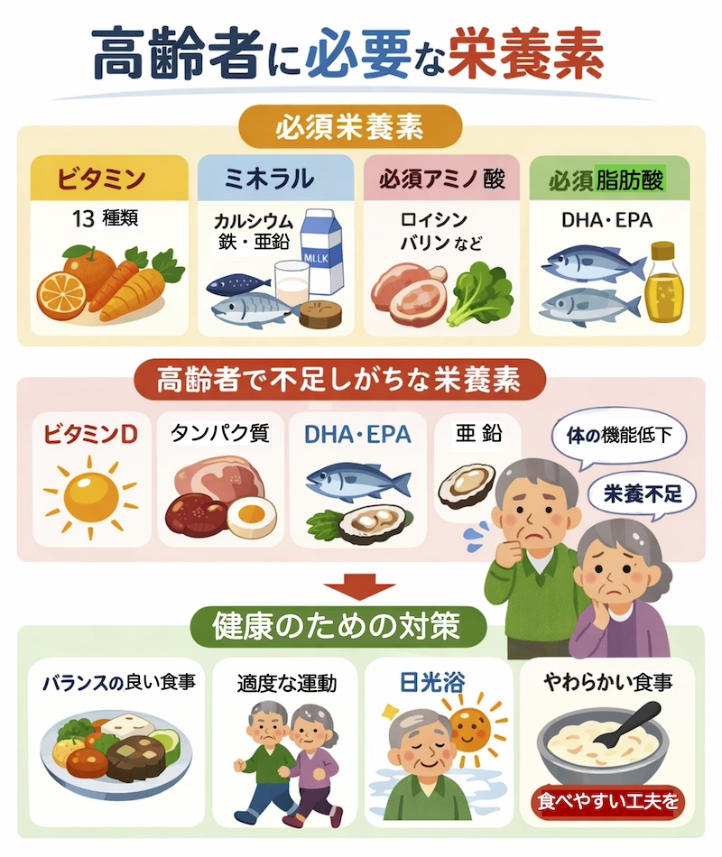
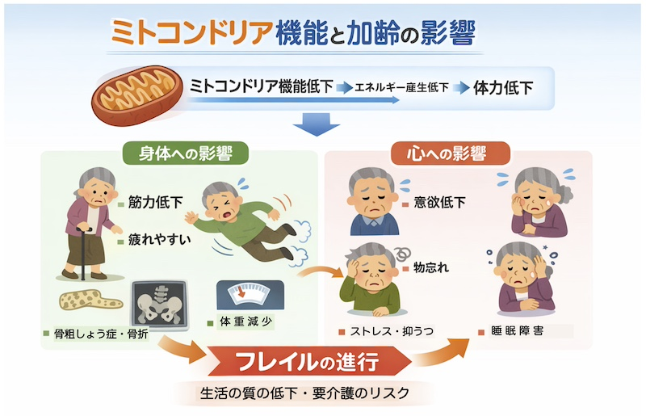

必須栄養素の役割
| 成 分 | 役 割 |
|---|
| アミノ酸 | 筋肉や臓器の材料 |
| 脂肪酸 | 細胞膜・脳機能・炎症調整 |
| ビタミン | 体の機能を正常に保つ（補酵素として働く） |
| ミネラル | 骨・筋肉・神経・体液バランスの維持 |
第３章 ここまでのまとめ
・ 必須栄養素は毎日の食事から
・ バランスの良い食事が基本
・ 多様な食材を取り入れることが重要！
第４章 高齢者で低下する機能
◼️１ 「ビタミンD」の合成低下（皮膚・肝臓で）
- カルシウム吸収が低下 → 骨粗鬆症・骨折リスク増加
- 筋力低下 → 転倒リスク増加
- 免疫機能低下 → 感染症にかかりやすい
◼️２ 「ビタミンA」の利用低下（目・皮膚などで）
- 視機能低下 → 暗いところで見えにくい
- 皮膚・粘膜の防御力低下
- 免疫機能の低下 → 感染に弱くなる
◼️３ 「タンパク質合成」低下（全身で、アルブミン低下）
- 血中アルブミン低下 → 浮腫（むくみ）
- 筋肉量の低下 → サルコペニア・フレイル
- 免疫力低下 → 感染リスク増加
◼️４ 「薬物代謝」酵素の低下（肝臓で）
- 薬の分解が遅くなる
- 副作用が出やすくなる
- 薬の蓄積による体調不良のリスク
◼️５ 代謝物の減少（全身で、「フレイル」との関係）
- アミノ酸（特にBCAA：ロイシンなど）
- カルニチン（脂肪をエネルギーに変換）
- NAD（エネルギー生産に関与）
- ビタミン関連物質
- 代謝の低下 → 筋力低下 → 活動低下 → フレイル
第５章 対策（ここが重要！）
・ 少量でも栄養価の高い食事を意識する
・ タンパク質をしっかり摂取（肉・魚・卵・大豆）
・ 適度な運動（筋肉維持）
・ 日光浴でビタミンDを補う
・ 食べやすい形（やわらか食・とろみ）に工夫
第６章 積極的に摂取したい栄養素（サプリ含む）
- ビタミンD（骨・免疫）※過剰注意
- ビタミンA（皮膚・粘膜）※過剰注意
- ビタミンC（抗酸化）
- DHA・EPA（脳・血管）
- BCAA（筋肉維持）
- 亜鉛（免疫）
- マグネシウム（筋肉・神経）
- ナイアシン（ビタミンB3）（エネルギー生産、ミトコンドリア機能）

これらの栄養素の一部は、ミトコンドリア機能やエネルギー代謝にも関与しており、加齢に伴う体力低下との関連が注目されています。
※サプリメントは過剰摂取のリスクもあるため、
医師・薬剤師に相談することが望ましいです。

第７章 まとめ
高齢者では、体内機能の低下により栄養不足が起こりやすくなります。
そのため、質の高い食事と適切な補助（必要に応じてサプリ）を
組み合わせることが健康維持に重要です。
コラム：高齢者がぜひ摂取すべき栄養と食事
-
◼️１ タンパク質をしっかり
筋肉と免疫のために、毎食少しずつ摂取しましょう。
例：卵、魚、鶏肉、豆腐、納豆、乳製品
※やわらかい料理（卵・豆腐・ひき肉）がおすすめ
※サプリメント：プロテイン、BCAAなど
-
◼️２ 骨のためのカルシウム・ビタミンD
骨折予防に重要です。
例：牛乳、ヨーグルト、小魚、大豆製品
※日光を浴びることも大切
※サプリメント：ビタミンD、カルシウム製剤
-
◼️３ 抗酸化ビタミンと食物繊維
老化予防・便秘対策に有効です。
例：野菜、果物、きのこ、海藻、雑穀
※野菜は毎食少しずつ
※サプリメント：ビタミンC（安全性が高い）、ビタミンA・E（過剰注意）
-
◼️４ 水分とエネルギー補給
脱水・低栄養を防ぐことが重要です。
※こまめな水分補給
※食べやすいもの（おかゆ、うどん、間食）を活用
※サプリメント：ビタミンB群（ナイアシンなど）
※サプリメントは食事の補助として有用ですが、過剰摂取や薬との相互作用に注意し、
可能であれば医師・薬剤師に相談しましょう。
参考文献
- 健康長寿ネット「フレイル・サルコペニア予防の栄養管理」
- ミトコンドリアでのエネルギー産生におけるビタミン・ミネラルの役割
- 核内NADレベルとミトコンドリア機能（ビタミン学会）
- 国立精神・神経医療研究センター（NCNP）研究報告
- 東京大学ほか ビタミンDと筋肉に関する研究
- 神戸大学 ビタミンB2とミトコンドリア機能に関する研究
※本ページは公的機関および学会の情報などをもとに作成しています。
トップページに戻る